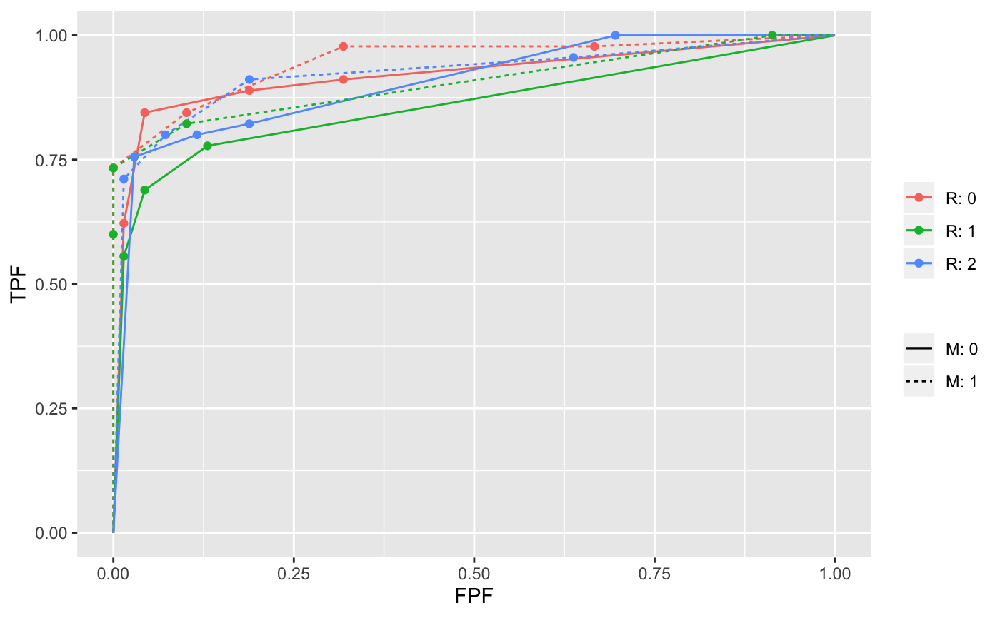
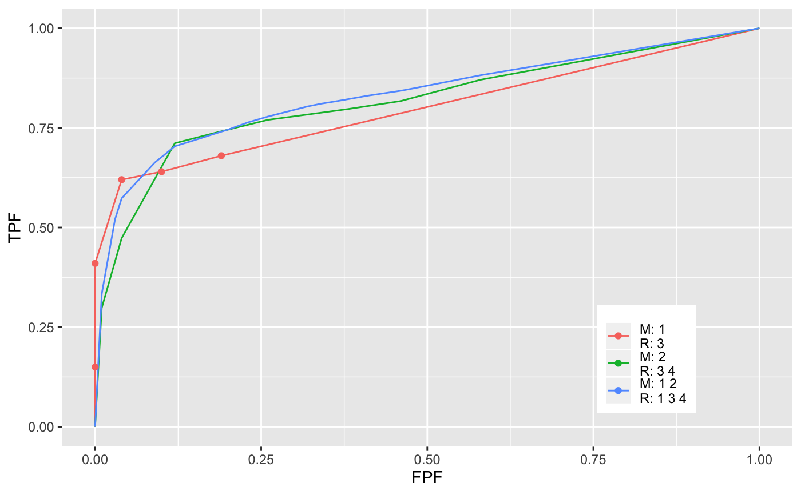
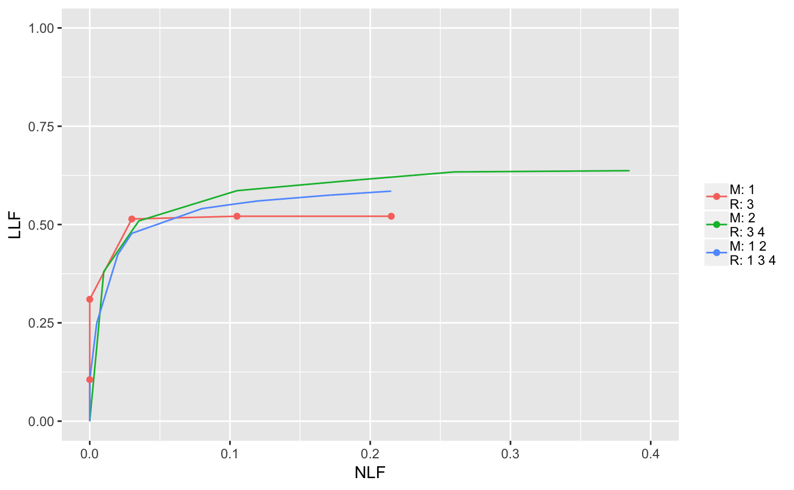
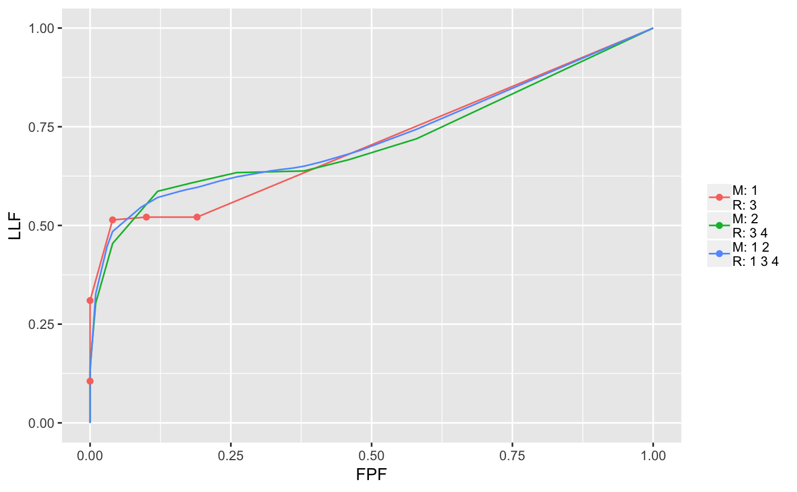
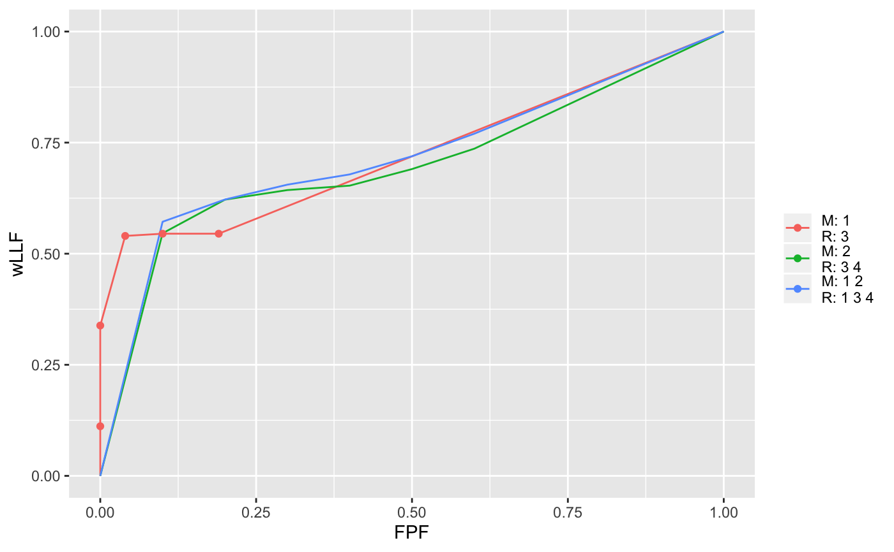

PlotEmpiricalOperatingCharacteristics.RdPlot empirical operating characteristics (operating points connected by straight lines) for specified treatments and readers, or if desired, plots only (no operating points) averaged over specified treatments and / or readers
PlotEmpiricalOperatingCharacteristics(dataset, trts = 1, rdrs = 1, opChType = "ROC")
| dataset | Dataset to be used for plotting |
|---|---|
| trts | List or vector: integer indices of treatments to be plotted |
| rdrs | List or vector: integer indices of readers to be plotted |
| opChType | Type of operating characteristic to be plotted:
|
A ggplot2 object containing the operating characteristic plot(s)
and a data frame containing the points defining the operating characteristics
are returned. For example, the returned objects for "ROC" operating
characteristics are as follows:
ggplot2 object. For continuous or averaged data, operating characteristics curves are plotted without showing operating points. For binned individual data, both operating points and connecting lines are shown. To avoid clutter, if there are more than 20 operating points, they are not shown
Data frame with four columns: abscissa, ordinate, class (which
codes treatment and reader) and type, which can be "individual", "continuous" or
"average"; "individual" refers to a one treatment and one reader.
The trts and rdrs are vectors or lists of integer
indices, not the corresponding string IDs. For example, if the string
ID of the first reader is "0", the value in rdrs should be
1 not 0. The legend shows the string IDs.
If both of trts and rdrs are vectors, all combinations of treatments
and readers are plotted. See Example 1.
If both trts and rdrs are lists, they must have the same length.
Only the combination of treatment and reader at the same position in their
respective lists are plotted. If some elements of the treatments and / or
readers lists are vectors, the average operating characteristic over the
implied treatments and / or readers are plotted. See Example 2.
## Example 1 ## Plot individual empirical ROC plots for all combinations of treatments ## 1 and 2 and readers 1, 2 and 3. Six operating characteristics are plotted. ret <- PlotEmpiricalOperatingCharacteristics(dataset = dataset02, trts = c(1:2), rdrs = c(1:3)) print(ret$Plot)## Example 2 ## Empirical ROC, FROC, AFROC and wAFROC plots. Each plot consists of ## three parts (see Example 3 for correspondences between indices and string identifiers ## for treatments and readers): ## (1) plot for the 1st treatment (string ID "1") and the 2nd reader (string ID "3") ## (2) plot for the 2nd treatment (string ID "2") AVERAGED over the 2nd and 3rd readers ## (string IDs "3" and "4"), and ## (3) plot AVERAGED over the first two treatments (string IDs "1" and "2") AND over ## the 1st, 2nd and 3rd readers (string IDs "1", "3" and "4") plotT <- list(1, 2, c(1:2)) plotR <- list(2, c(2:3), c(1:3)) ret <- PlotEmpiricalOperatingCharacteristics(dataset = dataset04, trts = plotT, rdrs = plotR) print(ret$Plot)ret <- PlotEmpiricalOperatingCharacteristics(dataset = dataset04, trts = plotT, rdrs = plotR, opChType = "FROC") print(ret$Plot)ret <- PlotEmpiricalOperatingCharacteristics(dataset = dataset04, trts = plotT, rdrs = plotR, opChType = "AFROC") print(ret$Plot)ret <- PlotEmpiricalOperatingCharacteristics(dataset = dataset04, trts = plotT, rdrs = plotR, opChType = "wAFROC") print(ret$Plot)##Example 3 ## Correspondences between indices and string identifiers for treatments and ## readers in this dataset. Apparently reader "2" did not complete the study. str(dataset04)#> List of 8 #> $ NL : num [1:5, 1:4, 1:200, 1:7] -Inf -Inf 1 -Inf -Inf ... #> $ LL : num [1:5, 1:4, 1:100, 1:3] 4 5 4 5 4 3 5 4 4 3 ... #> $ lesionNum : int [1:100] 1 1 1 1 1 1 1 1 1 1 ... #> $ lesionID : num [1:100, 1:3] 1 1 1 1 1 1 1 1 1 1 ... #> $ lesionWeight: num [1:100, 1:3] 1 1 1 1 1 1 1 1 1 1 ... #> $ dataType : chr "FROC" #> $ modalityID : Named chr [1:5] "1" "2" "3" "4" ... #> ..- attr(*, "names")= chr [1:5] "1" "2" "3" "4" ... #> $ readerID : Named chr [1:4] "1" "3" "4" "5" #> ..- attr(*, "names")= chr [1:4] "1" "3" "4" "5"## List of 8 ## $ NL : num [1:5, 1:4, 1:200, 1:7] -Inf -Inf -Inf -Inf -Inf ... ## $ LL : num [1:5, 1:4, 1:100, 1:3] 5 4 4 3 5 5 4 2 4 5 ... ## $ lesionNum : int [1:100] 1 1 1 1 1 1 1 1 1 1 ... ## $ lesionID : num [1:100, 1:3] 1 1 1 1 1 1 1 1 1 1 ... ## $ lesionWeight: num [1:100, 1:3] 1 1 1 1 1 1 1 1 1 1 ... ## $ dataType : chr "FROC" ## $ modalityID : chr [1:5] "1" "2" "3" "4" "5" ## $ readerID : chr [1:4] "1" "3" "4" "5"